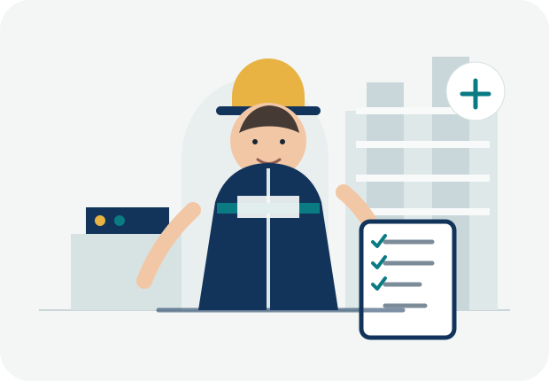

취업 준비부터 현장 실무까지,
안전관리자의 성장을 한 곳에서
안전과장은 안전관리자를 준비하는 사람에게는 자격증·영어·자기소개서·면접의 순서를, 현직 안전관리자에게는 위험성평가·MSDS·교육·밀폐공간 등 실제 업무 흐름을 제공합니다. 단순 자료 모음보다 다음에 무엇을 해야 하는지 보이는 구조를 지향합니다.

안전관리자 취업 준비 로드맵
자격증 → 영어 → 자기소개서 → 면접 순서로 준비하도록 원래 구성의 핵심 흐름을 복원했습니다.
자격증
산업안전기사 중심 CBT, 오답 재도전, 북마크와 과목별 반복학습으로 기본 직무지식을 만듭니다.
02→영어
토익스피킹 PART 1~5 템플릿과 실전 표현을 단계별로 정리해 취업 요건을 준비합니다.
03→자기소개서
내 경험을 안전 직무 언어로 바꾸고 STAR 구조, 항목별 평가기준, AI 초안·검토 기능으로 다듬습니다.
04→면접
기본질문, 빈출질문, 기업별 기술질문과 답변 노트를 활용해 말로 설명하는 연습까지 이어갑니다.
안전 자격증 CBT 학습
원본 문제 데이터와 회차별·종목별 구조를 유지했습니다. 학습 기록과 북마크는 현재 브라우저에 저장됩니다.
토익스피킹 파트별 학습
원본에 있던 PART 1~5 자료를 그대로 살리고, 취업 준비 단계 안에서 찾기 쉽게 배치했습니다.
지원서에 쓴 경험을 면접에서 설명할 수 있게
지원 회사와 직무, 자신의 경험을 바탕으로 초안을 만들고 STAR 구조와 직무 연결성을 점검합니다.
기본기·빈출질문·직무 기술질문·압박 대응을 정리하고 기업별 예상질문까지 이어서 준비합니다.
예상 질문마다 자신의 답변을 작성하고 현재 브라우저에 저장해 반복해서 수정할 수 있습니다.
취업 준비에서 놓치기 쉬운 연결
자격증 문제에서 외운 용어가 면접에서 그대로 끝나는 것은 아닙니다. 예를 들어 위험성평가를 공부했다면 정의만 말하기보다 유해·위험요인 파악 → 위험성 결정 → 감소대책 수립 → 실행·검증의 흐름을 자신의 경험과 연결해 설명해야 합니다. 그래서 안전과장은 시험자료와 실무자료를 분리하지 않고 서로 이어지게 구성합니다.
안전관리자 현장 실무 도구
제공해주신 EHS 프로그램의 기능을 일반 안전관리자 실무 흐름에 맞춰 재구성했습니다. 특정 회사 전용 표현은 제거했습니다.
현장에서는 ‘기록 → 조치 → 확인’이 남아야 합니다
재직자 영역은 서류를 예쁘게 만드는 것보다 위험요인을 발견하고, 법정 기준을 확인하고, 필요한 조치를 기록하며, 개선이 완료됐는지 확인하는 업무 흐름에 초점을 맞춥니다. 아래 도구들은 실제 사업장 기준과 회사 절차에 맞게 검토해 사용하는 보조도구입니다.
실무 기능 바로가기
위험성평가
계획·실시·감소대책·검증·교육까지 위험성평가 흐름을 단계별로 관리합니다.
MSDS 보건관리
화학물질 정보, 경고표지, 작업공정별 관리요령과 보건관리 항목을 정리합니다.
밀폐공간·온열질환
공간 체적, 환기량, 환기팬 가동시간과 유해가스 기준을 보조 계산합니다.
안전보건교육 관리
교육유형별 대상과 이수시간을 정리하고 현장 교육관리 기록을 보조합니다.
법령·지침 검색
안전보건 관계 법령과 실무 기준을 찾아 업무 판단의 출발점을 정리합니다.
사고·아차사고 기록
사고·아차사고의 발생정보, 원인, 조치사항을 구조화해 기록하는 화면입니다.
현장 작업 대시보드
금일 작업과 위험작업, 담당자, 개선상태를 한 화면에서 살펴보는 실무 대시보드입니다.
위험성평가 실무 가이드
도구를 사용하기 전 개념과 절차를 읽어볼 수 있는 설명형 콘텐츠입니다.
도구는 판단을 대신하지 않습니다
현장 안전업무는 공정, 설비, 물질, 작업자, 협력사, 기상조건 등 변수가 많습니다. 본 사이트의 자동 계산·정리 기능은 업무를 빠르게 구조화하기 위한 보조수단이며, 실제 작업허가·위험성평가·교육·보건조치의 법적 적정성을 보증하지 않습니다. 적용 전 최신 법령과 사업장 절차를 확인하세요.